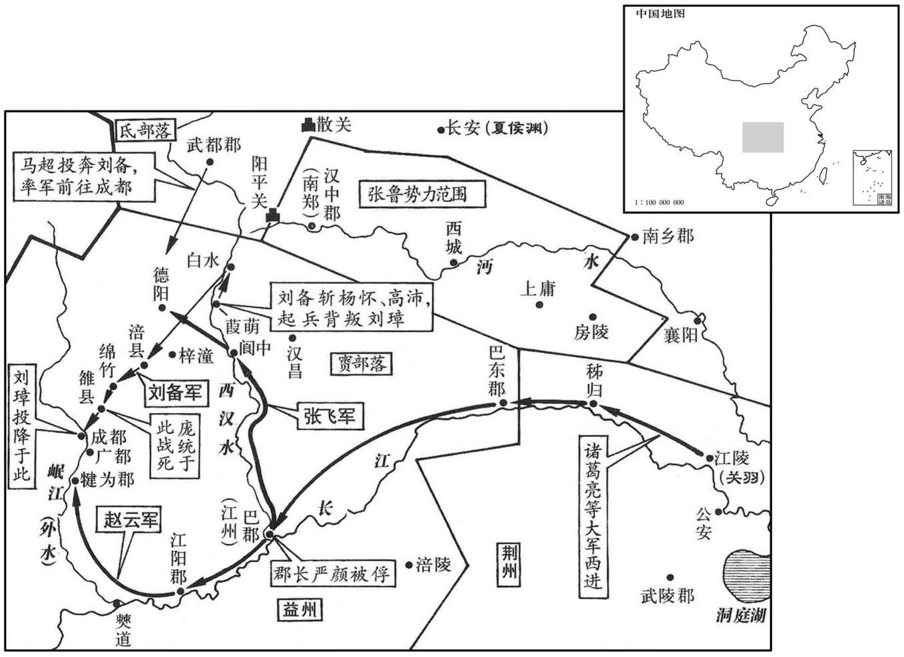

公元212年资治通鉴：本年记事、原文与白话对照
按原书编年位置阅读；追叙和史论不等于本年发生的事件。白话采用所据译本，缺译不以生成译文补齐。
卷66 · 本年记事
公元212年 · 汉孝献皇帝建安十七年
十七年〔（壬辰、二一二）〕
上传原文的注释括号有异常，字符原样保留；无法可靠划分的段落默认全文显示。
本年事件索引（现代整理）

本年形势与背景参考图
春，正月，曹操还邺。诏操赞拜不名，入朝不趋，剑履上殿，如萧何故事。
春季，正月，曹操回到邺城，献帝下诏，命令在曹操拜见皇帝时，司仪官只称他的官职，不称名字；准许曹操入朝见到皇帝时，不必迈小步向前急走，并可以佩剑穿鞋上殿，遵照汉初丞相萧何的先例。
本段人物：萧何
操之西征也，河间民田银、苏伯反，扇动幽、冀。五官将丕欲自讨之，功曹常林曰：〔据林传，时为五官将功曹。〕「北方吏民，乐安厌乱，〔乐，音洛。〕服化已久，守善者多；银、伯犬羊相聚，不能为害。方今大军在远，外有强敌，将军为天下之镇，〔谓留守邺也。〕轻动远举，虽克不武。」乃遣将军贾信讨之，应时克灭。余贼千余人请降，议者皆曰：「公有旧法，围而后降者不赦。」〔降，户江翻。〕程昱曰：「此乃扰攘之际，权时之宜。今天下略定，不可诛之；纵诛之，宜先启闻。」议者皆曰：「军事有专无请。」昱曰：「凡专命者，谓有临时之急耳。今此贼制在贾信之手，故老臣不愿将军行之也。」丕曰：「善。」即白操，操果不诛。既而闻昱之谋，甚悦，曰：「君非徒明于军计，又善处人父子之间。」〔以劝丕不专杀也。处，昌吕翻。〕
曹操西征关中时，河间人田银、苏伯造反，煽动幽州、冀州的百姓，引起混乱。五官中郎将曹丕打算亲自率军去征讨，功曹常林说：“北方的官员和百姓，乐于安定，厌恶战乱，服从朝廷的时间已很久，遵守法令的占多数。田银、苏伯等不过是聚集在一起的狗和羊，造不成多大的伤害。现在，我们的大军在远方，境外有强敌，将军镇守邺城，身系天下安危，轻率出军进行征讨，即使平定，也不足以显示威武。”于是，曹丕派遣将军贾信去讨伐，随即消灭叛军。还剩一千余人，请求投降，参预讨论的人都说：“曹公从前下过命令，凡是被包围后再投降的，一律不赦免。”程昱说：“这是在战乱时期所采取的一种临时应变策略。现在天下已基本平定，不能随便杀戮；即使要杀，也应当先向曹公报告。”那些人都说：“军事上的举动，可以专断，不必请示。”程昱说：“专断是指临时发生紧急情况。必须当机立断。现在，这些叛民控制在贾信手中，因此，我不愿将军擅作决定。”曹丕说：“对。”立即派人向曹操报告，曹操果然下令赦免不杀。后来，听到程昱的建议，非常高兴，说：“你不仅明了军事策略，还善于处理别人父子之间的关系。”
故事：破贼文书，以一为十；国渊上首级，皆如其实数，〔国渊时统留事。上，时掌翻。操问其故，渊曰：「夫征讨外寇，多其斩获之数者，欲以大武功，耸民听也。河间在封域之内，银等叛逆，虽克捷有功，渊窃耻之。」操大悦。
过去的惯例，在击败敌军的文告中，杀死一人要报成十人。而国渊在报告斩杀人数时，都据实上报。曹操询问他原因，国渊说：“征讨境外的敌寇，多报杀死及俘虏人数，是为了炫耀武力，耸人听闻。河间在咱们的疆界以内，田银等进行叛乱，虽然取得胜利，建立战功，我心中却感到羞耻。”曹操大为高兴。
夏，五月，癸未，诛卫尉马腾，夷三族。〔腾诣邺见上卷十三年。〕
夏季，五月，癸未（疑误），诛杀卫尉马腾，并把他的三族一齐处死。
六月，庚寅晦，日有食之。
六月，庚寅晦（二十九日），出现日食。
秋，七月，螟。
秋季，七月，发生螟灾。
马超等余众屯蓝田，夏侯渊击平之。
马超等人的残余部众驻守蓝田，夏侯渊率军讨伐，全部平定。
鄜贼梁兴〔鄜县，前汉属左冯翊，后汉省。师古曰：鄜，音敷。〕寇略冯翊，诸县恐惧，皆寄治郡下，议者以为当移就险阻。左冯翊郑浑曰：「兴等破散，藏窜山谷，虽有随者，率胁从耳。今当广开降路，〔降，户江翻；下同。〕宣论威信，而保险自守，此示弱也。」乃聚吏民，治城郭，为守备，〔治，直之翻。〕募民逐贼，得其财物妇女，十以七赏。民大悦，皆愿捕贼；贼之失妻子者皆还，求降，浑责其得他妇女，然后还之。于是转相寇盗，党与离散。又遣吏民有恩信者分布山谷告谕之，出者相继；乃使诸县长吏各还本治，以安集之。〔长，知两翻。〕兴等惧，将余众聚鄜城，操使夏侯渊助浑讨之，遂斩兴，余党悉平。浑，泰之弟也。〔郑泰，见用于董卓而欲图卓者也。〕
县盗贼梁兴在冯翊抢掠。各县的官员十分害怕，都把县府移到郡府所在地。议论此事的人认为应当迁移到险要的地方去据守。左冯翊郑浑说：“梁兴等已经破散，陷藏逃窜到高山深谷，虽然还有人跟随，但大多数是被他胁迫的。现在，应当广开招降的途径，宣扬朝廷的威信，而据险自守这种作法是示弱。”于是，郑浑聚集官吏百姓，修整城郭，严加守备，招募百姓攻击叛民，获得叛民的财物和妇女，十分之七赏赐给夺取者。百姓大为高兴，都愿意追捕叛民。失去妻子的叛民，都回来请求投降，郑浑责令他们送来叛民所俘获的其他妇女，然后才还给他们的妻子。于是，这些叛民互相攻击，梁兴的党羽纷纷离散。郑浑又派有威望的官员和百姓分别到山谷去宣传朝廷的旨意，出来投降的人络绎不绝。郑浑于是命令各县的官员都把县府迁回本地，安抚百姓及投降的叛民。梁兴等恐惧，率领残部聚集在城，曹操派夏侯渊率军协助郑浑进行征讨，于是斩杀梁兴，余党全部平定。郑浑是郑泰的弟弟。
九月，庚戌，立皇子熙为济阴王，懿为山阳王，邈为济北王，敦为东海王。〔时许靖在蜀，闻立诸王，曰：「将欲翕之，必姑张之；将欲夺之，必姑与之。其孟德欴谓乎。」济，子礼翻。
本段缺少可靠对应白话，原文完整保留；未使用生成译文。
初，张纮以秣陵山川形胜，劝孙权以为治所；及刘备东过秣陵，亦劝权居之。权于是作石头城，徙治秣陵，改秣陵为建业。〔秣陵，属丹阳郡，本金陵也，秦始皇改；孙权改曰建业；后避晋愍帝讳，改曰建康。石头城，；在今建康城西二里。金陵志：石头城去台城九里，南合秦淮水。张舜民曰：石头城者，天生城壁，有如城然，在清凉寺北覆舟山上。江行自北来者，循石头城，转入秦淮。陆游曰：龙湾望头山，不甚高，然峭立江中，缭绕如垣墙。清凉寺距石头里余，西望宣化渡及历阳诸山。宋白曰：晋平吴，分为二邑，自淮水南为秣陵，北为建业。江表传：纮谓权曰：「秣陵，楚武王所置，名为金陵；地劫冈阜连石头。昔秦始皇东巡，经此县，望气者云，金陵地形，有王者都邑之气，故掘断连冈，改名秣陵。今处所具存，宜为都邑。」献帝春秋又载权曰：「秣陵有小江百余里，可以安大船，吾方理水军，当移据之。」又据晋书郗隆传，隆为扬州刺史，镇秣陵。齐王冏檄令赴讨赵王伦，隆停檄不下。时王邃镇石头，隆军西赴邃者甚众。隆遣从事于牛渚禁之，不得止。将士奉邃攻杀隆。则石头在牛渚西。详考是事，秣陵军将赴邃，欲自牛渚而西勤王也；石头自在牛渚东。
本段缺少可靠对应白话，原文完整保留；未使用生成译文。
吕蒙闻曹操欲东兵，说孙权夹濡须水口立坞。〔说，输芮翻。贤曰：濡须，水名，在今和州历阳县西南。孙权夹水立坞，状如偃月。杜佑曰：濡须水，在历阳西南百八十里。余据濡须水出巢湖，在今无为军北二十五里，濡须坞在今巢县东南四十里。〕诸将皆曰：「上岸击贼，〔上，时掌翻。〕洗足入船，何用坞为！」蒙曰：「兵有利钝：战无百胜，如有邂逅，敌步骑蹙，人不暇及水，其得入船乎﹖」权曰「善！」遂作濡须坞。
吕蒙听说曹操打算再次东征，劝说孙权在濡须水口的两岸修建营寨。将领们都说：“上岸攻击敌军，洗洗脚就上船了，要营寨有什么用？”吕蒙说：“军事有顺利之时，也有失利之时，不会百战百胜，如果敌人突然出现，步骑兵紧紧逼迫，我们连水边也到不了，难道能上船吗？”孙权说：“很对！”于是，下令修筑营寨，就称作濡须坞。
冬，十月，曹操东击孙权。董昭言于曹操曰：「自古以来，人臣匡世，未有今日之功；有今日之功，未有久处人臣之势者也。〔处，昌吕翻；下同。〕今明公耻有凓德，乐保名节；〔乐，音洛。〕然处大臣之势，使人以大事疑己，诚不可不重虑也。」〔重，直用翻。〕乃与列侯诸将议，以丞相宜进爵国公，九锡备物，以殊勋。〔贤曰：礼含文嘉曰：九锡，一曰车马，二曰衣服，三曰乐器，四曰朱户，五曰纳陛，六曰虎贲百人，七曰斧钺，八曰弓矢，九曰秬鬯。谓之九锡，锡，予也；九锡皆如其德。左传曰：分鲁公以大路、大旗、夏后氏之璜、封父之繁弱、祝宗、卜史、备物典策。〕荀彧以为：「曹公本兴义兵以匡朝宁国，〔朝，直遥翻。〕秉忠贞之诚，守退让之实；君子爱人以德，〔记檀弓，曾子曰：君子之爱人也以德，细人之爱人也以姑息。〕不宜如此。」操由是不悦。及击孙权，表请彧劳军于谯，〔劳，力到翻。〕因辄留彧，以侍中、光禄大夫、持节、参丞相军事。〔辄，言专辄也。〕操军向濡须，彧以疾留寿春，饮药而卒。〔彧传云：操馈之食，发视，乃空器也，于是饮药而卒。考异曰：陈志彧传曰：「以忧薨。」范书彧传曰：「操馈之食，发视，乃空器也，于是饮药而卒。」孙盛魏氏春秋亦同。按彧之死，操隐其诛。陈寿云以忧卒，盖阙疑也。今不正言其饮药，恐后世为人上者，谓隐诛可得而行也。〕彧行义修整而有智谋，好推贤进士，故时人皆惜之。〔行，下孟翻。好，呼到翻。〕
冬季，十月，曹操率军东征孙权。董昭对曹操说：“自古以来，人臣拯救国家的功劳，从来没有您今天的功业这样大；有您今天功业的人，没有长久居于臣属的。现在，您以惭愧为耻，乐于保持名节；然而您处在大臣的地位，会使人为这件大事怀疑您，实在不可不多加考虑。”于是，与列侯及将领们商议，认为丞相曹操应该进爵为国公，由皇帝赐给他表示特权的九锡，来表彰曹操的特殊功勋。荀认为：“曹公原来是为了拯救朝廷，安定天下而发起义兵的，怀有忠贞的诚心，严守退让的实意。君子以德爱人，不应当这样。”曹操因此很不高兴。到东征孙权时，曹操上表请求献帝派荀到谯县来慰劳军队。荀到后，曹操就借机留下他，让他以侍中、光禄大夫的身份，持符节，参预丞相府的军事。曹操大军向濡须进发，荀因病留在寿春，喝下毒药而死。荀品德高尚，行为端正，而且有智谋，喜欢推荐贤能的士人，因此，当时人对他的去世都很惋惜。
史家评论 · 原文及其白话
臣光曰：孔子之言仁也重矣，自子路、冉求、公西赤门人之高第，令尹子文、陈文子诸候之贤大夫，皆不足以当之，而独称管仲之仁，岂非以其辅佐齐桓，大济生民乎！〔论语：孟武伯问：「子路仁乎﹖」子曰：「不知也。」又问。子曰：「由也，千乘之国，可使治其赋也，不知其仁也。」「求也何如﹖」曰：「求也，千室之邑，百乘之家，可使为之宰也，不知其仁也。」「赤也何如﹖」曰：「赤也，束带立于朝，可使与宾客言也，可知其仁也。」子张问曰：「令尹子文，三仕为令尹，无喜色；三已之，无愠色。旧令尹之政，必以告新令尹。何如﹖」子曰：「忠矣。」曰：「仁矣乎﹖」曰：「未知，焉得仁﹖」「崔子弒齐君，陈文子有马十乘，弃而违之，至于他邦，则曰犹吾大夫崔子也，违之，之一邦，则又曰犹吾大夫崔子也，违之。何如﹖」子曰：「清矣。」曰：「仁矣乎﹖」曰：「未知，焉得仁﹖」子贡曰：「管仲非仁者与﹖桓公杀公子纠，不能死，又相之。」子曰：「管仲相桓公，霸诸侯，一匡天下，民到于今受其赐；微管仲，吾其被发左衽矣！岂若匹夫匹妇之为谅也，自经于沟渎莫之知也！」子路曰：」桓公杀公子纠，召忽死之，管仲不死。曰：未仁乎﹖」子曰：「桓公九合诸侯，不以兵车，管仲之力也！如其仁！如其仁！」〕齐桓之行若狗彘，管仲不羞而相之，〔行，下孟翻。相，息亮翻。〕其志盖以非桓公则生民不可得而济也。汉末大乱，群生涂炭，自非高世之才不能济也。然则荀彧舍魏武将谁事哉！
臣司马光曰：“孔子对于评价仁德是非常重视的。即使是子路、冉求、公西赤这些杰出的门人，令尹子文、陈文子这些诸侯的贤能大夫，都不够资格，而唯独称赞管仲的仁德，岂不是因为他辅佐齐桓公，对百姓有很大的恩德吗？齐桓公的行为像猪狗一样，但管仲并不以为羞耻而辅佐他，是因为他知道，没有齐桓公，百姓就不能得到拯救。汉末天下大乱，百姓灾难深重，假如没有绝顶的才能，便不能拯救百姓。既然这样，那么荀舍弃曹操，还能去辅佐谁呢？
齐桓之时，周室虽衰，未若建安之初也。建安之初，四海荡覆，尺土一民，皆非汉有。荀彧佐魏武而兴之，举贤用能，训卒厉兵，决机发策，征伐四克，遂能以弱为强，化乱为治，〔治，直吏翻。〕十分天下而有其八，其功岂在管仲之后乎！管仲不死子纠而荀彧死汉室，其仁复居管仲之先矣！〔复，扶又翻。〕
齐桓公的时代，周期王室虽已衰败，但还没有像建安初期的汉朝王室那样。建安初期，全国大乱，汉朝朝廷连一尺土地、一个百姓都没有。荀辅佐曹操而使他兴起，推荐任用贤能的人才，训练军队，裁决机要，制定策略，征伐四方，连续获胜。于是转弱为强，化乱为治，占有了天下的十分之八，荀的功劳难道还不如管仲吗！管仲没有为子纠而死，但荀却为汉朝王室而死，他的仁德又在管仲之上了！
而杜牧乃以为「彧之劝魏武取兖州则比之高、光，官渡不令还许则比之楚、汉，及事就功毕，乃欲邀名于汉代，譬之教盗穴墙发匮而不与同挈，得不为盗乎！」臣以为孔子称「文胜质则史」，〔见论语。〕凡为史者记人之言，必有以文之。然则比魏武于高、光、楚、汉者，史氏之文也，岂皆彧口所言邪！用是贬彧，非其罪矣。且使魏武为帝，则彧为佐命元功，与萧何同赏矣；彧不利此而利于杀身以邀名，岂人情乎！
可是，杜牧却认为：“荀在劝曹操攻取兖州时，把他比作高祖刘邦与光武帝刘秀；在官渡之战时不让曹操撤退回许都，则比作楚汉相争。等到大事已经完成，荀才想在汉代留下尽忠的声名。这就好比教小偷去挖墙破柜而不与小偷分赃，能说他不是小偷吗？”臣认为，孔子说：“文胜质则史。”所有撰写历史的人，在记载历史人物的言语时，都会加以修饰。那么，把曹操比作刘邦、刘秀以及楚汉相争等，只是史学家的文字，怎么会都是荀所说的话呢！根据这些话来贬低荀，是冤枉人。而且，假使曹操称帝，那么荀将成为最大的开国功臣，会受到与萧何一样的赏赐。荀不贪图这样的富贵，而牺牲生命换取的名声，难道是人之常情吗！
本段人物：萧何
十二月，有星孛于五诸侯。〔晋天文志曰：五诸侯五星，在东井北。又太微南蕃，左执法东北一星曰谒者，谒者东北三星曰三公，三公北三星曰九卿，九卿西五星曰内五诸侯，内侍天子，不之国也。孛，蒲内翻。〕
十二月，有异星出现在五诸侯星座。
刘备在葭萌，庞统言于备曰：「今阴选精兵，昼夜兼道，径袭成都，刘璋既不武，又素无豫备，大军卒至，〔卒，读曰猝。〕一举便定，此上计也。杨怀、高沛，璋之名将，各杖强兵，据守关头，〔即白水关头也。〕闻数有笺谏璋，〔数，所角翻。〕使发遣将军还荆州。将军遣与相闻，说荆州有急，欲还救之，并使装束，外作归形，此二子既服将军英名，又喜将军之去，计必乘轻骑来见将军，因此执之，进取其兵，乃向成都，此中计也。退还白帝，〔白帝，即巴东鱼复县城也。公孙述据成都，自称白帝，改鱼复曰白帝城。〕连引荆州，徐还图之，此下计也。若沈吟不去，〔沈，持林翻。〕将致大困，不可久矣。」备然其中计。
刘备驻军在葭萌，庞统向刘备建议说：“现在，应暗中挑选精兵，昼夜不停地兼程赶路，直接袭击成都，刘璋既不懂军事，又一向没有预备，大军突然到达，可以一举平定，这是上策。杨怀、高沛都是刘璋部下的名将，各领强兵，据守关头，听说他们多次上书，劝刘璋把将军送回荆州。将军派人去告诉他们，说荆州有紧急情况，您打算回军救援，并让人打点行装，表面上作出要回去的样子。这两个人既佩服将军的英名，又高兴将军离去，我想他们一定会轻装骑马来见将军。乘机把他们捉住，吞并他们的部队，再向成都进军，这是中策。退回白帝城，与荆州力量联合在一起，再慢慢策划进取益州的办法，这是下策。如果迟疑着不离去，将会陷入严重困境，不能再耽误了。”刘备同意采用庞统的中策。
及曹操攻孙权，权呼备自救。备贻璋书曰：「孙氏与孤本为唇齿，而关羽兵弱，今不往救，则曹操必取荆州，转侵州界，〔州界，谓益州界。〕其忧甚于张鲁。鲁自守之贼，不足虑也。」因求益万兵及资粮，璋但许兵四千，其余皆给半。备因激怒其众曰：「吾为益州征强敌，师徒勤瘁，〔瘁，秦醉翻。〕而积财吝赏，何以使士大夫死战乎！」张松书与备及法正曰：「今大事垂立，如何释此去乎！」松兄广汉太守肃，恐祸及己，因发其谋。于是璋收斩松，敕关戍诸将文书皆勿复得与备关通。〔复，扶又翻。〕备大怒，召璋白水军督杨怀、高沛，责以无礼，斩之；〔责其无客主之礼也。〕勒兵径至关头，并其兵，进据涪城。〔此用庞统之中计也。〕
等到曹操进攻孙权，孙权要求刘备回军援救。刘备写信给刘璋，说：“孙权和我本是唇齿的相依，而关羽兵力薄弱，现在不在援救，曹操就一定夺取荆州，进而侵犯益州边界，这远比张鲁更值得担心。张鲁是个只求自保的贼寇，不足以使人忧虑。”乘机要求刘璋给他增拨一万名士兵和军用物资，刘璋只允许拨给四千人，军用物资也都只给一半。刘备就以此为借口，激怒他部下的将士说：“我们为益州讨伐强敌，士卒劳苦，而刘璋却爱惜财物，如此吝啬，怎么能使士大夫为他死战呢！”张松写信给刘备和法正说：“现在，大事马上就可完成，怎么能放弃这里离去呢？”张松的哥哥、广汉郡太守张肃知道张松的密谋后，恐怕祸事会连累自己，就告发了张松的阴谋。于是刘璋逮捕张松，把他处斩，同时，向各关口要塞守将发布文书，命令他们都不要再与刘备往来。刘备大怒，召见刘璋部下的白水军督杨怀、高沛，责备他们对客人无礼，把这两人处斩。刘备率领军队直接进驻关头，吞并了杨怀、高沛的部队。继续进军，占领涪城。
译本中未与胡注本可靠对应的内容
以下另列供核对版本差异，不并入胡注本正文。
译本所附古文
[7]九月，庚戌，立皇子熙为济阴王，懿为山阳王，邈为济北王，敦为东海王。
译本白话
九月，庚戍（二十一日），献帝封皇子刘熙为济阴王，刘懿为山阳王，刘邈为济北王，刘敦为东海王。
译本所附古文
[8]初，张以秣陵山川形胜，劝孙权以为治所；及刘备东过秣陵，亦劝权居之。权于是作石头城，徒治秣陵，改秣陵为建业。
译本白话
起初，张认为秣陵山川雄伟，地势险要，劝孙权把秣陵作为治所。到刘备向东经过秣陵时，也曾劝孙权到那里居住。孙权于是修建石头城，把治所迁到秣陵，将秣陵改称建业。